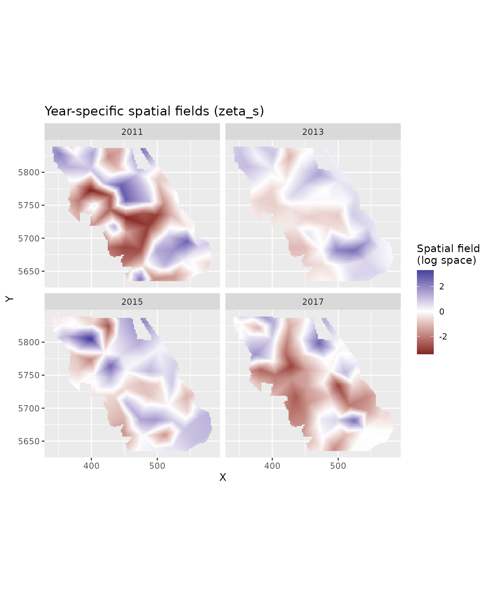

Spatially varying coefficients with factor predictors
2026-06-18
Source:vignettes/articles/svc-factor-models.Rmd
svc-factor-models.RmdIf the code in this vignette has not been evaluated, a rendered version is available on the documentation site under ‘Articles’.
When a spatial_varying formula contains a factor
variable—such as gear type, survey method, or year—the choice of there
are several possible model structures. Because each SVC (spatially
varying coefficient) field is a penalized spatial random field with its
own variance parameter (by default), the number and interpretation of
those fields depend on how spatial and
spatial_varying are specified together.
This vignette explains the main configurations, shows how to verify what was actually fit, and gives guidance on which structure to choose for a given scientific question.
Quick reference
| Case | spatial |
spatial_varying |
Fields estimated | When to use |
|---|---|---|---|---|
| 1 | "on" |
~ 0 + factor |
omega_s + K SVC fields |
shared average spatial baseline + factor-level deviations |
| 2 | "on" |
~ 1 + factor |
omega_s as reference + K−1 SVC deviation fields |
one level is a natural reference/baseline |
| 3 | "off" |
~ 1 + factor |
K SVC fields | same as Case 2 but intercept in SVC component |
| 4 | "off" |
~ 0 + factor |
K independent SVC fields, no omega_s
|
levels treated symmetrically, no shared surface |
Setup
We use the built-in British Columbia Pacific Cod dataset. Coordinates
X and Y are in UTM zone 9 (km). We create a pre-factored year column so
that the SVC column names are clean. We use the year column because it
is easily available in the pcod_2011 dataset, but the
factor column might more commonly be a gear type, survey type, or maybe
a month.
For some structural demonstrations we use
do_fit = FALSE, which builds the model object without
fitting it. This lets us inspect fit$spatial and
colnames(fit$tmb_data$z_i) (the SVC model matrix)
cheaply.
Case 1: Global spatial field plus factor-level SVC deviations
fit1 <- sdmTMB(
density ~ 1,
data = pcod_2011,
mesh = mesh,
spatial = "on",
spatial_varying = ~ 0 + fyear,
family = tweedie(link = "log"),
do_fit = FALSE
)
fit1$spatial
#> [1] "on"
colnames(fit1$tmb_data$z_i)
#> [1] "fyear2011" "fyear2013" "fyear2015" "fyear2017"This estimates one global omega_s plus one SVC field per
factor level (K fields total). The linear predictor for level k is:
The interpretation is an average spatial pattern—estimated from all data—plus factor-level spatial deviations from that average. Because the global field and the level-specific deviations can trade off against each other, this model may be harder to estimate than the other cases shown here.
Use this when a scientifically meaningful shared spatial baseline exists and you want to allow each factor level to depart from it spatially.
Case 2: Reference-level field plus SVC deviations
fit2 <- sdmTMB(
density ~ 1,
data = pcod_2011,
mesh = mesh,
spatial = "on",
spatial_varying = ~ 1 + fyear,
family = tweedie(link = "log"),
do_fit = TRUE
)
fit2$spatial
#> [1] "on"
colnames(fit2$tmb_data$z_i) # note that fyear2011 is missing
#> [1] "fyear2013" "fyear2015" "fyear2017"The ~ 1 + fyear formula creates treatment contrasts: one
intercept plus K−1 deviation columns. When spatial = "on"
and spatial_varying includes an intercept, sdmTMB aliases
the ordinary spatial field omega_s as the SVC
intercept/reference-level field, drops the duplicate
(Intercept) column from the SVC design matrix, and prints a
one-line informational message (suppressible via
silent = TRUE). The K−1 SVC fields are spatial deviations
of the other levels from that reference.
Use this when one factor level is a natural reference—a trusted gear, a primary survey, a control method—and you want the other levels to be expressed as spatial differences from it.
Case 3: SVC intercept field plus deviations, no ordinary spatial field
fit3 <- sdmTMB(
density ~ 1,
data = pcod_2011,
mesh = mesh,
spatial = "off",
spatial_varying = ~ 1 + fyear,
family = tweedie(link = "log"),
do_fit = TRUE
)
#> The behaviour of `spatial = "off"` with `~ 1 + factor` in `spatial_varying` has
#> changed.
#> It now fits a genuine SVC intercept field plus `K - 1` deviation fields
#> (previously the intercept was dropped, leaving only the deviations with no
#> reference field).
#> To use the ordinary spatial field as the reference-level field instead (same
#> resulting model), set `spatial = "on"`.
fit3$spatial
#> [1] "off"
colnames(fit3$tmb_data$z_i)
#> [1] "(Intercept)" "fyear2013" "fyear2015" "fyear2017"With spatial = "off" and an intercept in
spatial_varying, the (Intercept) column is
retained in the SVC design matrix and becomes a genuine SVC
intercept field. There is no omega_s. The linear predictor
is:
Conceptually the same as Case 2, but the intercept field is an SVC
field rather than omega_s.
We can prove they are the same:
Case 4: Independent SVC fields per factor level, no ordinary spatial field
fit4 <- sdmTMB(
density ~ 1,
data = pcod_2011,
mesh = mesh,
spatial = "off",
spatial_varying = ~ 0 + fyear,
family = tweedie(link = "log"),
do_fit = FALSE
)
fit4$spatial
#> [1] "off"
colnames(fit4$tmb_data$z_i)
#> [1] "fyear2011" "fyear2013" "fyear2015" "fyear2017"This estimates one independent SVC field per factor level and no
global omega_s. The linear predictor for level k is:
Use Case 4 when the factor levels should be treated indepdently with no shared spatial surface. This is the cleanest syntax for “one independent spatial field per factor level.”
Fitted example: independent year fields (Case 4)
We now fit Case 4 on the full dataset with independent spatial fields for each year. This is appropriate when years are treated as exchangeable levels with no shared spatial trend.
fit <- sdmTMB(
density ~ 1,
data = pcod_2011,
mesh = mesh,
spatial = "off",
spatial_varying = ~ 0 + fyear,
family = tweedie(link = "log")
)
tidy(fit, "ran_pars", conf.int = TRUE)
#> # A tibble: 7 × 5
#> term estimate std.error conf.low conf.high
#> <chr> <dbl> <dbl> <dbl> <dbl>
#> 1 range 21.9 10.1 8.91 53.9
#> 2 phi 15.0 0.719 13.7 16.5
#> 3 sigma_Z 2.93 0.866 1.64 5.23
#> 4 sigma_Z 1.50 0.568 0.713 3.15
#> 5 sigma_Z 2.17 0.682 1.17 4.02
#> 6 sigma_Z 2.52 0.899 1.25 5.07
#> 7 tweedie_p 1.56 0.0161 1.53 1.60The sigma_Z rows give the marginal standard deviation of
each year’s spatial field. Larger values indicate more spatial variation
in that year’s density.
Let’s predict onto a spatial grid for all years and plot the year-specific spatial fields.
nd <- replicate_df(qcs_grid, "year", unique(pcod_2011$year))
nd$fyear <- factor(nd$year)
pred <- predict(fit, newdata = nd)
# select the zeta_s columns for each year
zeta_cols <- grep("^zeta_s_fyear", names(pred), value = TRUE)
pred_long <- pred |>
select(X, Y, year, all_of(zeta_cols)) |>
tidyr::pivot_longer(
cols = all_of(zeta_cols),
names_to = "field_year",
values_to = "zeta_s"
) |>
mutate(field_year = sub("zeta_s_fyear", "", field_year)) |>
filter(as.character(year) == field_year) # each row's year matches its field
ggplot(pred_long, aes(X, Y, fill = zeta_s)) +
geom_raster() +
facet_wrap(~year) +
scale_fill_gradient2() +
coord_fixed() +
labs(fill = "Spatial field\n(log space)", title = "Year-specific spatial fields (zeta_s)")
Each panel shows the estimated log-scale spatial deviation for that year relative to the overall mean (fixed intercept). Positive values indicate areas of higher-than-average density in that year; negative values indicate lower-than-average density.
Choosing a parameterization
The choice should be driven by the scientific question:
Case 1 — use when an average spatial pattern is scientifically meaningful and you want to allow factor levels to depart from it spatially. Be aware that the shared field and factor deviations can trade off, sometimes making estimation difficult.
Case 2/3 — use when one factor level is a natural reference (a primary survey, a standard gear, a control treatment). The global spatial field serves as that reference level’s field, and the other levels are estimated as spatial differences from it. This is often the most interpretable parameterization for comparative studies. Case 2 includes the intercept as
omega_s, i.e. a separate spatial random field. Case 3 includes the intercept as a column in the SVC design matrix.Case 4 — use when the factor levels should be treated symmetrically/independently and no shared spatial surface is scientifically motivated. One independent spatial field per level.
Changes to the SVC factor and intercept behaviour compared to earlier releases
Behaviour for one of these specifications changed compared to the sdmTMB 1.0 release and before:
| Case | Specification | Fit changed? | Notes |
|---|---|---|---|
| 1 |
spatial = "on", ~ 0 + factor
|
No | Unchanged. The old message recommending spatial = "off"
has been removed; this is a valid specification. |
| 2 |
spatial = "on", ~ 1 + factor
|
No | Unchanged fit. A one-line informational message now reports that
omega_s is being aliased as the SVC intercept (suppressible
via silent = TRUE). |
| 3 |
spatial = "off", ~ 1 + factor
|
Yes | Previously the intercept column was stripped and
omega_s was zeroed, leaving only K−1 deviation fields with
no reference. Now fits a genuine SVC intercept field plus K−1
deviations. A one-cycle warning is emitted. Use Case 2 to recover the
historically-intended reference-level model. |
| 4 |
spatial = "off", ~ 0 + factor
|
No | Same K SVC fields as before; the fitted object’s
spatial slot now reports "off" instead of
incorrectly reporting "on". |
Only Case 3 has a different fitted-model structure. In all other cases the fitted model is the same; only labelling and messaging have changed.